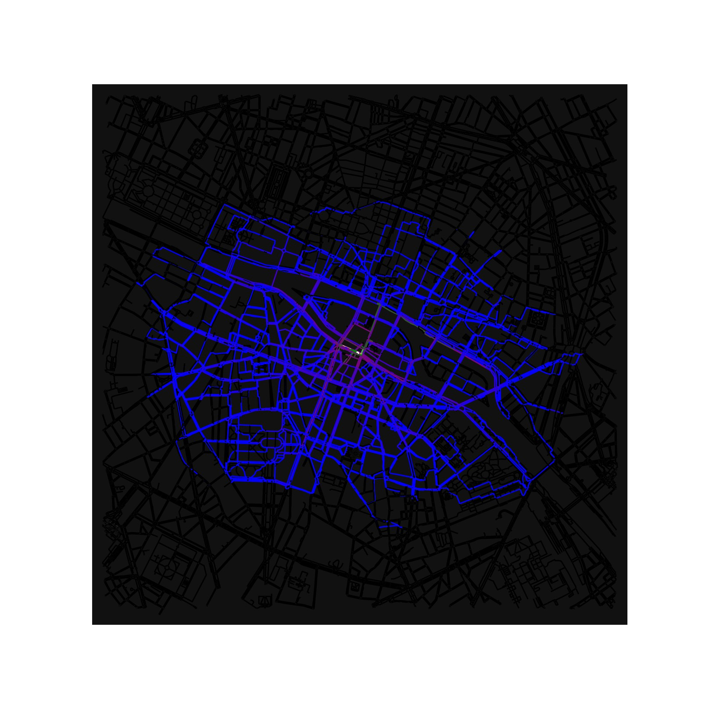
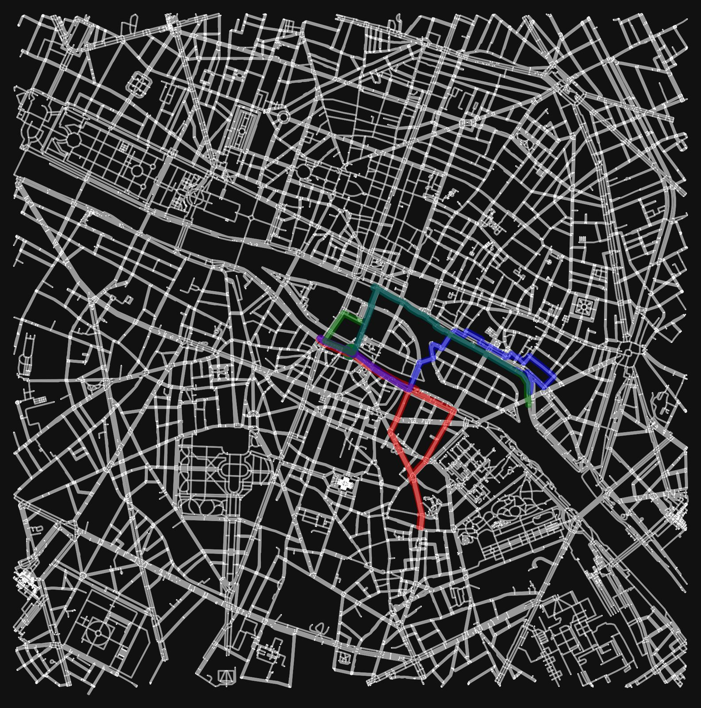
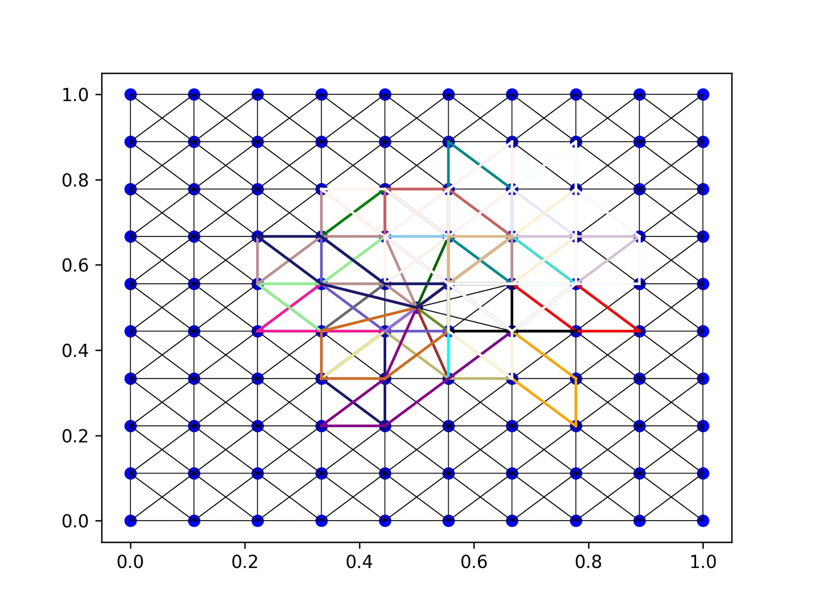
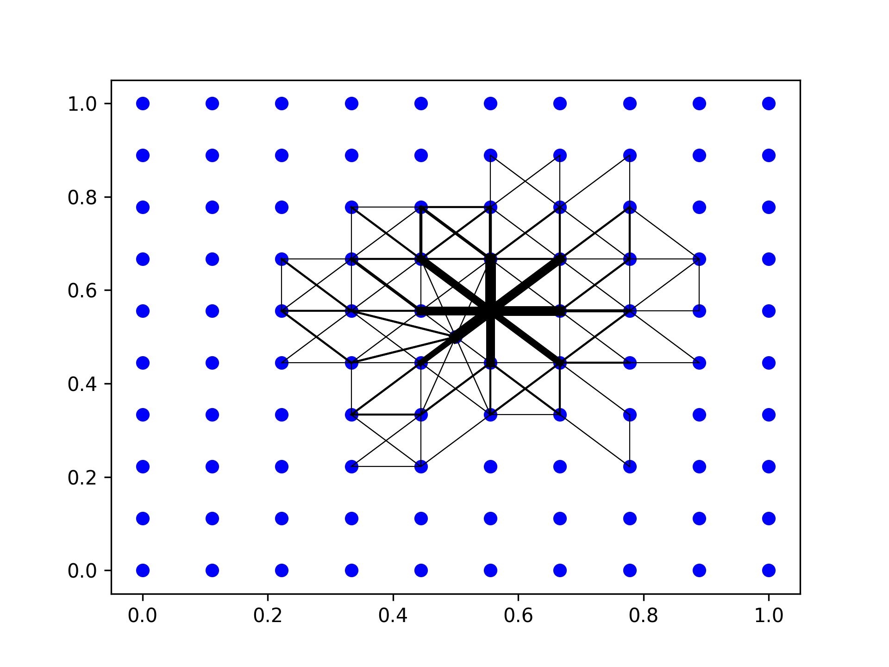
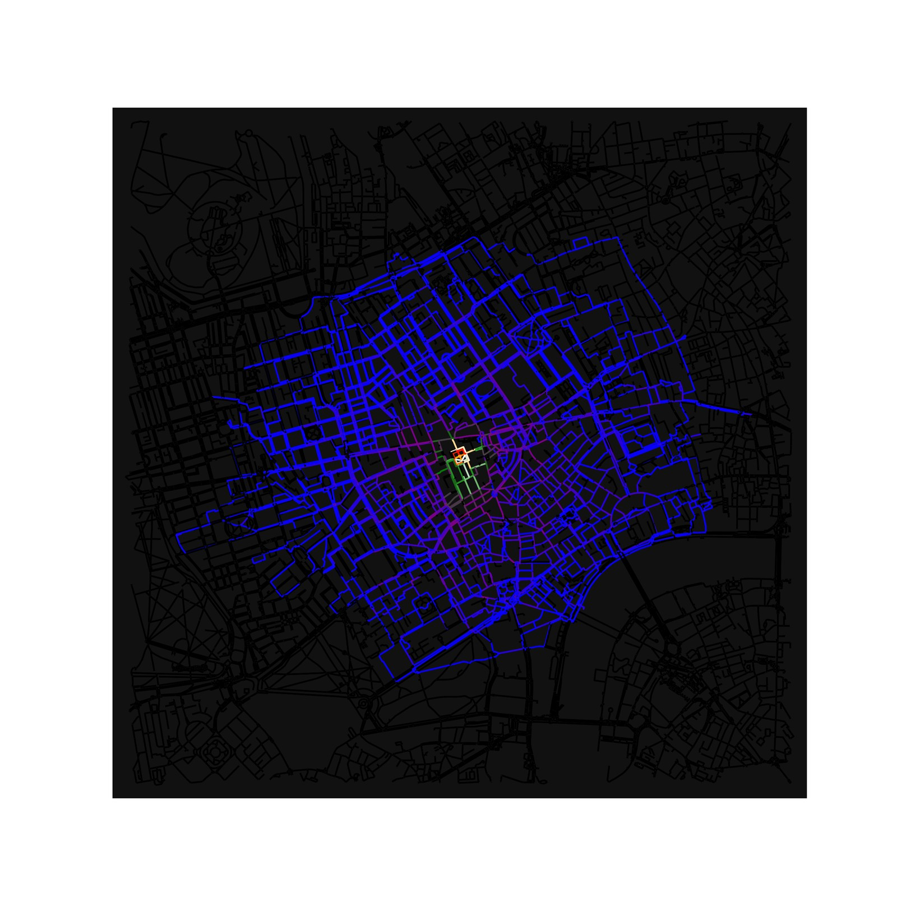

The road less travelled - from the dijkstras shortest path to the least visited path

1 The least travelled path lets you explore new areas
Many now the Dijkstra shortest path algorithm. It allows you to calculate the shortest path in a network.
This can be a routing network or a network of streets and ways, like a map.
Usually we are only interested in the shortest way to get from A to B. Google Maps does this nicely and even considers congestion on the edges of the graph, the streets.
But what if you are not interested in getting there the fastest? Or you want always a new way. Sounds strange. I often go for a short stroll in the neighborhood. Because of the street layout, I often visited the same streets. This quickly becomes boring. Sometimes I go astray on purpose and discover interesting new things. This is the least travelled path.
2 Help in finding the least travelled path
Nowadays, it is very easy to find the shortest path. But what about the least travelled path?
This is how I came up with the idea. What if your phone could show to you where you have been, and you would simple reveal the map as in a computer game? While certainly easily feasible, such an app has the drawback of huge privacy concerns. It basically tracks your location all the time and aggregates this information. While this is something IOS and android are doing in the core routines, it is difficult to handle in an app. Give me a shout-out if you think otherwise.
I then though what if we could only plan the route every time different? So, instead of verifying the route, we would suggest additional, uncharted itineraries. This is how I came up with the expression, the least travelled path.
Applying this approach to central Paris looks like this. Imagine you always start at Notre Dame. From there, you actually concentrically explore the city by always picking another destination. The street layout causes some streets to be frequented more often (purple on the map).

Three unique paths look like this. These paths share some streets. Especially bridges and riverfront ways. But how does it work?

3 How did I get there: the prototype
3.1 Making a street layout
I first generated a graph out of random points by identifying neighbors within a 20% margin of the domain. For all neighbors, I have stored the distance. Congestion-enabled algorithms would use the travel time. For every visit, I simply add the original distance to the edge, making it more costly to visit.
Using this approach, I have nodes and edges with a length.
3.2 The algorithm
My least visited path algorithm
- Repeat for the number of desired paths
- Find a planned destination point that is within the desired distance as the crow flies.
- Use Dijkstra’s algorithm to build up a path to the planned destination that obeys the smallest cost for the next step. Implementation uses a min heap for efficiency and simplicity. To avoid overly long trips: Check if the return trip is within the planned maximum distance along the path to the destination. If not, shorten it to the node that is just half the maximum travel distance.
- Calculate a fresh path to this updated destination.
- Update the travel cost of the visited edges by their original value. Also, record how many times this edge was traveled.
- Calculate a return path to the origin and again update the edges


4 Real life algorithm
4.1 Getting the map and setting up the graph
Osmnx in python allows us to download any map we want.
Instead of increasing the distance as in the prototype, we now use an attribute travel time for the edge. We also initialize the number of visits.
4.2 Algorithm for real map
- We search a random point within a radius, say 800 m.
- Get the shortest path, using NetworkX this time.
- Check if the path is not too long for the outgoing journey
- Update the edges, this time doubling the travel time.
- Calculate the return and update travel time again
5 Walking in London vs walking in Paris
One thing I discovered while exploring different areas is the difference in the street layout and how it impacts the algorithm. 19th century cities, or even more modern ones with multiple lanes and ways on the same street, lead to a rather uniform choice. The algorithm will simply choose the other lane or sidewalk on the same street because it’s connected by another edge.
Older cities, like London or smaller European cities, which have smaller streets, lead to a better experience of exploration. The same is true for more residential areas, which ultimately I had in mind for this idea. See the following image or the initial one of the three paths in London.

6 Getting it into a product
Well,… a failure. First, there are the privacy concerns I mentioned in the beginning. The app would have the highest impact on a mobile phone platform. A non-cloud version could at least mitigate some of the privacy concerns. However, I could not find an adequate replacement for osmnx, which runs on android. Development would be feasible, but very time-consuming.
Therefore, I rather try my luck with any unvisited alley I can find and see what life has in store.
All code can be found here.